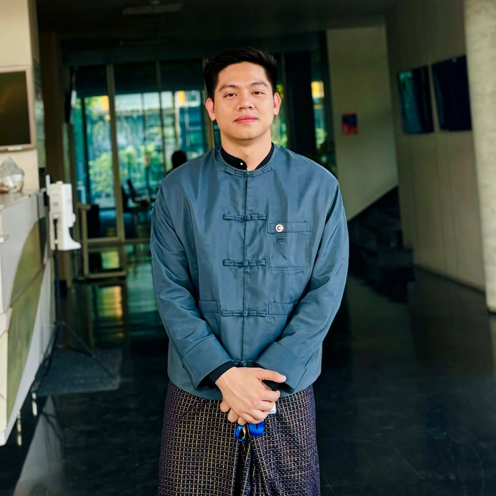
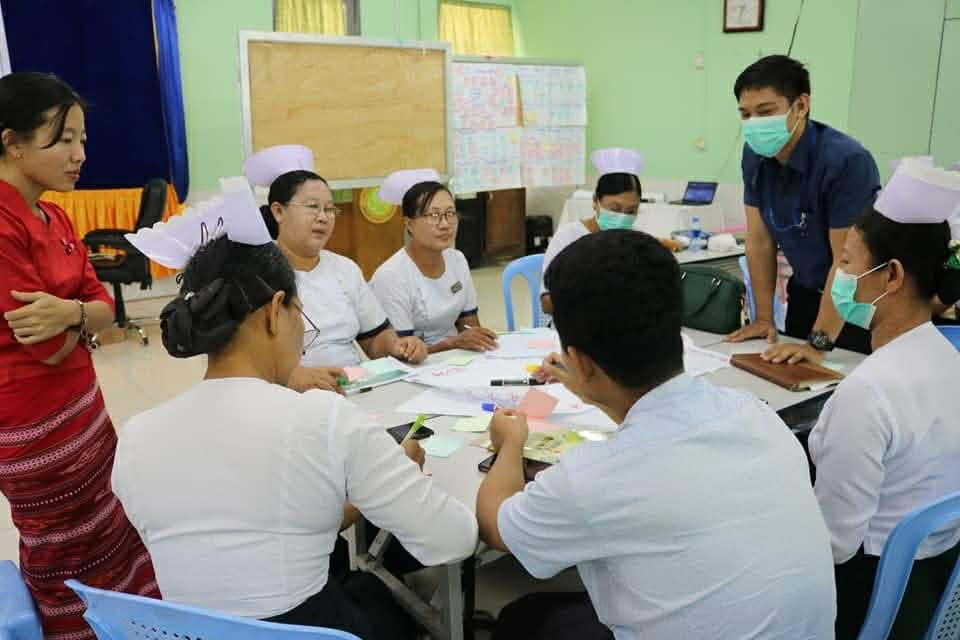
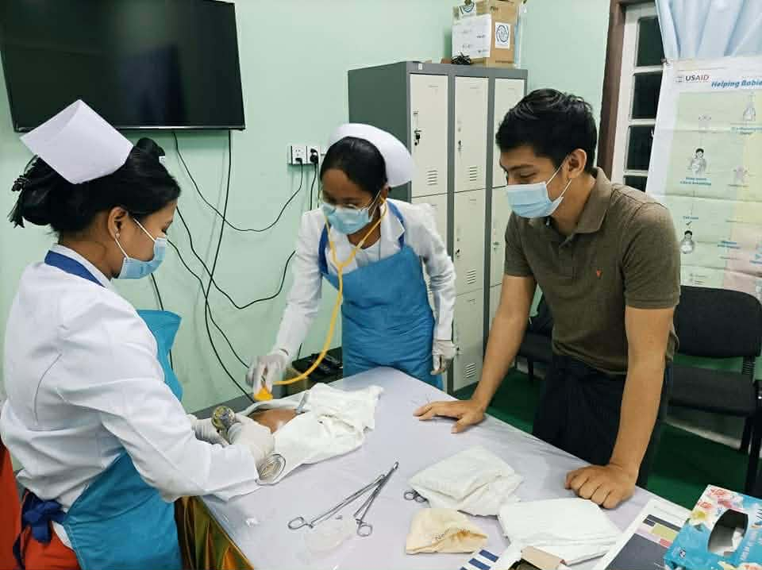

Medical Doctor & Public Health Professional
Advancing Healthcare with Expertise and Impact
Dedicated to improving population health, specifically focusing on sexual and reproductive health via robust clinical care and extensive programmatic field experience.

Academic Journey
Master of Arts in Population and Sexual and Reproductive Health (SRH)
Institute for Population and Social Research (IPSR), Mahidol University, Salaya Campus, Thailand
August 2024 – Present
Bachelor of Medicine, Bachelor of Surgery (M.B.,B.S.)
University of Medicine, Magway, Myanmar
Graduated in 2016
Professional Experience
Regional Coordinator
Ipas (Post-Abortion Care Program) | Access to Health Fund
March 2021 – December 2023 | Rakhine State, Myanmar

Senior Field Program Officer
Jhpiego (Chevron Project) | Extending Learning & Performance Improvement Centre
September 2019 – February 2021 | Sittwe, Northern Rakhine State, Myanmar

Field Capacity Development Officer
Jhpiego (Defeat Malaria, USAID)
March 2019 – August 2019 | Sittwe, Northern Rakhine State, Myanmar
Field Program Officer
Jhpiego (Maternal and Child Survival Program, USAID)
April 2018 – February 2019 | Sittwe, Northern Rakhine State, Myanmar
Team Leader / Medical Doctor
International Rescue Committee (IRC) | Access to Health Fund
June 2017 – March 2018 | Rathaedaung Township, Nothern Rakhine State, Myanmar
Medical Doctor
Aung Medical Centre (AMC)
September 2016 – May 2017 | Monywa, Sagaing Region, Myanmar
Skills & Certificates
Specific Skills
- Software: Microsoft Word, Excel, PowerPoint, Google Workspace
- Statistical Tools: R studio and Python
- Languages: Fluent in Burmese (spoken and written), Competent user in English (spoken and written)
Certificates
- Training on Communication for Development by UNESCO Myanmar (2018)
- TOT on Training Skill by Defeat Malaria, USAID (2019)
- TOT on Technical Skill (Malaria & other diseases) by Defeat Malaria, USAID (2019)
Get in Touch
Available for public health initiatives, medical consultations, and professional collaborations.
Current Address:
Near Salaya Campus, Mahidol University,
Nakhon
Pathom, Bangkok, Thailand
Permanent Address:
Water Pool Road,
Chan Mya Waddi Quarter,
Monywa, Sagaing Region, Myanmar
09 919 029 21
hteinlinoung@gmail.com
Referees
Updated contact details and additional references can be provided upon request.
Dr. Aung Than Oo
MSc Student, Uppsala University (Sweden)
Email: dr.aungthanoo89@gmail.com
Zin Mar Khine
Gender and Protection Coordinator, Oxfam (Sittwe)
Email: k.zin.0009@gmail.com